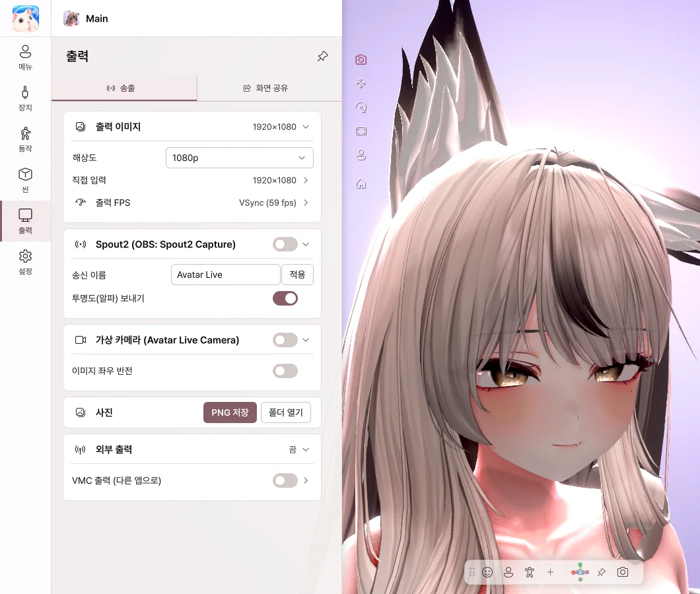
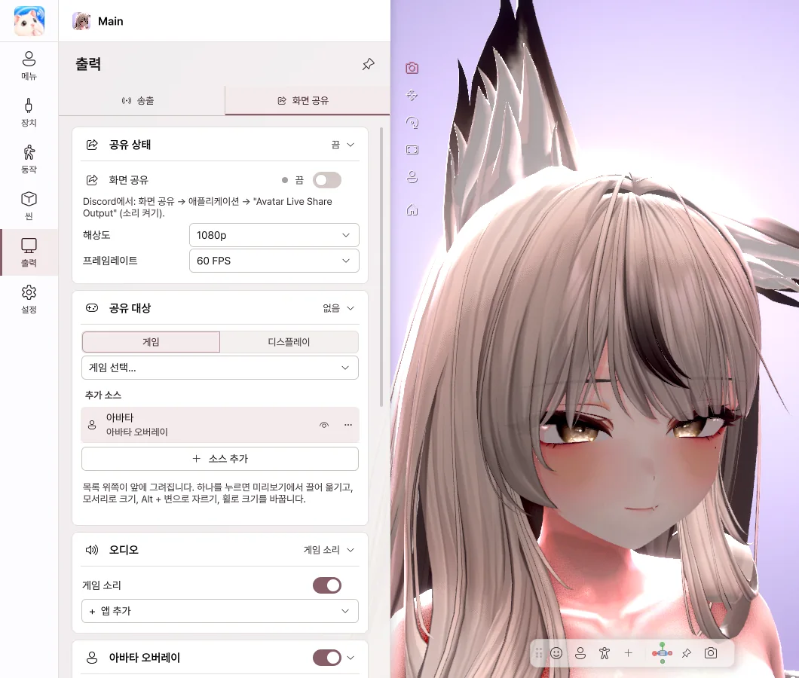

9. 출력
아바타 화면을 방송 프로그램이나 통화 앱으로 보냅니다.
| 보낼 곳 | 방법 |
|---|---|
| OBS (투명 배경) | Spout2 |
| Discord · Zoom · Teams 카메라 | 가상 카메라 |
| Discord 게임 방송 | 화면 공유 |
| 사진 | PNG 저장 |
송출

- 출력 이미지 — 내보낼 화면 크기를 고릅니다.
- Spout2 — 켜고 OBS에서 Spout2 Capture 소스를 추가하면 아바타가 나옵니다. 배경을 투명으로 하면 배경 없이 보낼 수 있습니다.
- 가상 카메라 — 처음 한 번 가상 카메라 설치… 를 누르고, 상대 앱에서 카메라로 Avatar Live Camera를 고릅니다.
- 사진 — PNG 저장으로 메뉴 없이 화면을 저장합니다.
Discord는 시작할 때만 카메라를 찾습니다. 목록에 없으면 Discord를 완전히 껐다가 다시 열어 주세요.
Discord 화면 공유

- 공유 대상에서 게임 또는 디스플레이를 고릅니다.
- 화면 공유를 켭니다.
- Discord에서 화면 공유 → 애플리케이션 → Avatar Live Share Output을 고르고 소리를 켭니다.
- 친구에게는 게임과 아바타가 함께 보이고, 나에게는 게임만 보입니다.
- 미리보기에서 아바타를 드래그해 위치와 크기를 맞춥니다.
- 게임 소리를 켜면 게임 소리만 친구에게 보냅니다.
게임이 검게 보이면 게임을 테두리 없는 창이나 창 모드로 바꿔 보세요. Avatar Live는 관리자 권한 없이 실행하는 것을 권장합니다.
💡 공유 소리에는 Steam Streaming Speakers나 VB-Audio CABLE 같은 가상 재생 장치가 필요합니다.
외부 출력 (VMC)
VMC 출력을 켜면 아바타의 움직임을 다른 앱으로 보냅니다. 실험적 기능입니다.